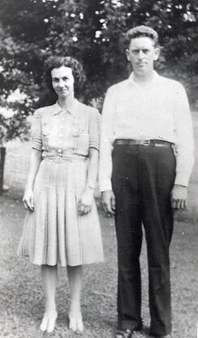
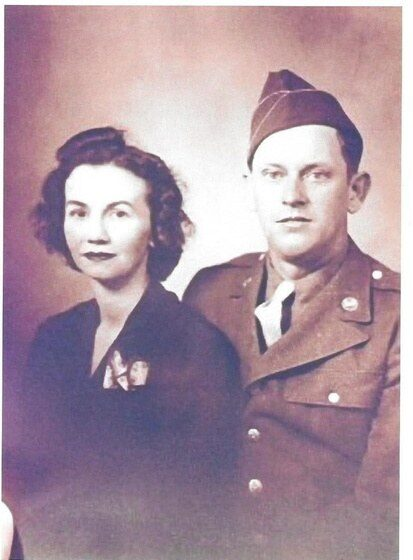
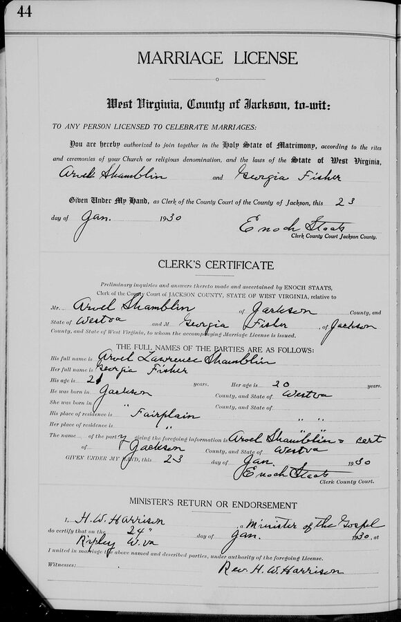
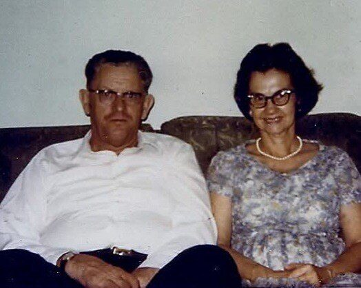
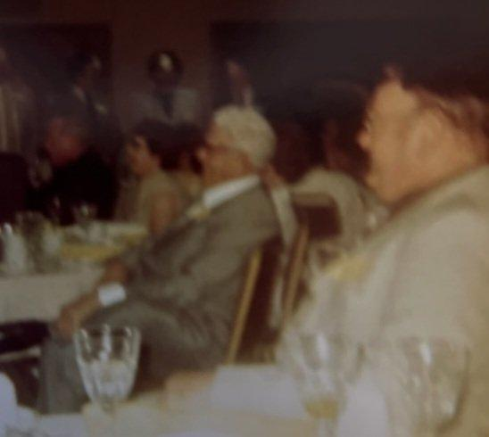

Arvel Lawrence Shamblen
20 January 1909 – 11 January 2001
Quick Facts
Immediate Family
Parents
- David Clayton Shamblin (about 1869–1947)
- Sarah Louise Staats (23 April 1871–1933)
Spouses
- Georgia Mae Fisher (1909–1988)
Children
- Richard Lawrence Shamblen (4 February 1932–3 October 1968)
- Betty Carolyn Shircliff (born 17 April 1934)
- Lowell Harold Shamblen (born 18 December 1935)
- Clifford Earl Shamblen (born 27 January 1938)
Siblings
- Belvin “Moody” Shamblen (died 1966)
- Frankie Odell (Shamblen) Parsons (died 1975)
- Orpha Pearl (Shamblen) Casto (died 1955)
- Rome LaFayette Shamblen (died 1983)
- Sarah Lula / Louise (Shamblen) Foglesong (born about 1904)
- Beryl Clayton Shamblen (died 1980)
Family Relationship Notes
Arvel was the youngest son of David Clayton Shamblin and Sarah Louise Staats. The 1910 and 1920 census households place him with six older siblings; the sibling names are also given in the family account. The exact dates shown for those siblings come from family lists and online memorials.
Arvel and Georgia Mae Fisher married on 24 January 1930 at Ripley, Jackson County, West Virginia, by Rev. H. W. Harrison. The county marriage register records the license on 23 January and the return on 24 January. Their four children were born at home in Fairplain between 1932 and 1938.
Arvel enlisted in the U.S. Army on 4 April 1944 at Fort Thomas, Kentucky, as a Private, serial 35078624. The enlistment record lists him as a carpenter. The service dates 4 April 1944–7 December 1945 are supported by a veteran benefit claim. Basic training at Fort Knox, service in Europe, and discharge through Camp Atterbury are family accounts; no unit or personnel file has been located.
The family identifies his burial as Spring Grove Cemetery, Cincinnati, beside son Richard. Geni and an older family account instead say Cross Lanes, Kanawha County, West Virginia, without naming a cemetery. No interment card or grave record has settled the location.
On Family Tree Sites
Couple Folder
Life Timeline
1909 · age 0
Born (20 Jan), Jackson County, WV
1910 · age 1
In his parents' household with six older siblings, Tug Fork Road, Ripley district, Jackson Co., WV
1920 · age 11
At home with his parents, Fairplain, Jackson Co., WV
1930 · age 21
Married Georgia Mae Fisher (24 Jan); farming on rented land, Ripley, Jackson Co., WV
1932–1938 · age 23–29
Four children born at home, Fairplain, Jackson Co., WV
1933 · age 24
Mother Sarah Louise died (7 Sep), Jackson Co., WV
1940 · age 31
Family of six in the census, Ripley district, Jackson Co., WV
c. 1944 · age 35
Moved to 827 W. Washington Street; worked at DuPont, Belle, Charleston, WV
1944 · age 35
Enlisted in the U.S. Army (4 Apr), Fort Thomas, Kentucky
1945 · age 36
Service ended (7 Dec); discharged through Camp Atterbury, Indiana
1947 · age 38
Father David Clayton died (16 Mar), West Virginia
1950 · age 41
Family at 827 W. Washington Street, Charleston, WV
1968 · age 59
Son Richard killed in a truck crash (3 Oct), near Mt. Pleasant, Pennsylvania
1984 · age 75
Living at 711 Orchard Street, Charleston, WV
1988 · age 79
Wife Georgia died (3 Jul), Charleston, WV
2001 · age 91
Died (11 Jan), Fairfield, Butler Co., Ohio
Life Story
Arvel Lawrence Shamblen was born on 20 January 1909 in Jackson County, West Virginia, the youngest son of David Clayton Shamblin and Sarah Louise Staats. The 1910 census finds him as a baby on Tug Fork Road in the Ripley district, the youngest of seven children then at home; by 1920 he was eleven and living at home at Fairplain. The family called him “Pop.”
He left school after the eighth grade and learned the carpenter's trade, much of it from his future father-in-law, Virdie Fisher. On 23 January 1930 the Jackson County clerk issued a license for Arvel, 21, and Georgia Fisher, 20, both of Fairplain, and the next day Rev. H. W. Harrison married them at Ripley. That spring's census shows the young couple farming on rented land in the Ripley district.
Four children were born at home at Fairplain between 1932 and 1938, beginning with Richard Lawrence on 4 February 1932. Arvel bought the Shamblen farm from his father in installments, and natural gas later found under the land added royalty income. In 1940 the family of six was still in Jackson County.
Around 1944 the family moved to Charleston, settling at 827 West Washington Street, and Arvel went to work as a carpenter and millwright at the DuPont plant in Belle. That April, at thirty-five, he enlisted in the Army at Fort Thomas, Kentucky. The family remembers basic training at Fort Knox, service in Europe, and a discharge through Camp Atterbury, Indiana, in December 1945.
After the war he went back to DuPont, built up a rental property on Elizabeth Street in Charleston, and promised each of his children $1,000 toward college. He and Georgia were Baptists at Calvary Baptist Church, where he served as an usher. They lost their eldest son, Richard, in 1968, and Georgia died in 1988. Arvel died on 11 January 2001 in Fairfield, Ohio, at ninety-one. The family says he was buried at Spring Grove Cemetery in Cincinnati, beside Richard.
More of Arvel's story will be added as family members share their memories.
Photo Gallery








Sources and Evidence
- 1910 U.S. census, Ripley district, Jackson County, WV, Tug Fork Road, ED 50, sheet 13A (Roll T624_1681): Arvel, 9/12, in the household of David C. and Sarah L. Shamblen
- 1920 U.S. census, Ripley district, Jackson County, WV (Roll T625_1954, p. 4A), indexed “Ariel L. Shamblin,” 11, with D. C. and Sarah L. Shamblin
- West Virginia, Jackson County marriage register, pp. 44–45: license 23 Jan 1930 (clerk Enoch Staats) for Arvel Laurence Shamblin, 21, born Jackson County, and Georgia Fisher, 20, both of Fairplain; married 24 Jan 1930 at Ripley by Rev. H. W. Harrison. Image in the couple's Documents folder (from Ancestry)
- 1930 U.S. census, Ripley district, Jackson County, WV (Roll 2535, p. 5B, dwelling 96): Arvel, 21, head, farmer, renting; wife Georgia, 20
- WWII draft registration: born 20 Jan 1909, Ripley, WV; residence Fairplain; age 31; wife Georgia May Shamblen
- 1940 U.S. census, Ripley district, Jackson County, WV, sheet 7A (Roll T627_4410, ED 18-11): Arvel (indexed “Orvil L”), 31, wife Georgia, 30, and four children; residence in 1935 Kenna, Jackson County; Georgia's schooling high school 4th year
- U.S. WWII Army Enlistment Records: Arvel L. Shamblen, enlisted 4 Apr 1944, Fort Thomas, Newport, KY; Private; serial 35078624; carpenter; married; residence Kanawha County
- Deceased veteran benefit claim: born 20 Jan 1909; Army 4 Apr 1944 – 7 Dec 1945; died 11 Jan 2001
- 1950 U.S. census, 827 W. Washington St., Charleston, Kanawha County, WV: Arvel L. and Georgia M. with four children
- U.S. Public Records Index: Arvel L. Shamblen, 711 Orchard St., Charleston, WV, 1984
- Ohio Deaths: Arvel L. Shamblen, b. 20 Jan 1909 WV, d. 11 Jan 2001, Fairfield, Butler Co., widowed, carpenter, Army veteran; father Shamblen, mother Staats; cert. 000547
- Social Security Death Index: Arvel L. Shamblen, b. 20 Jan 1909, d. 11 Jan 2001, last residence Hamilton, Ohio
- West Virginia Births Index: Arvel Laurence Shamblen, 1909, Jackson County (FHL film 567211)
- Obituary index: Charleston, WV, published 14 Jan 2001 (gives birth about 1910)
- Katherine A. Polsley Bryan, Genealogy of the Baltzly-Balsley-Polsley Family (1939): Georgia Mae Fisher m. 24 Jan 1930 Arvel Laur. Shamblin (b. 20 Jan 1908); lists three of the four children
- Family accounts summarized in the couple profile (a son's written memoir; family photo captions)
Research Notes and Open Questions
- Birth year: 1909 is backed by every record seen (death record, SSDI, draft card, enlistment, births index, and his age 21 on the 1930 license). Only the 1939 Polsley genealogy and some online trees say 1908; the couple profile still carries the year as open. A West Virginia birth record would close it.
- Burial: the family says Spring Grove Cemetery, Cincinnati, beside his son Richard; Geni and an older family account say Cross Lanes, Kanawha County, WV, with no cemetery named. A Spring Grove interment card or his 2001 obituary would settle it.
- Death place: Fairfield (Ohio death record) vs Hamilton (SSDI last residence only).
- Unit, overseas service and discharge place are from family accounts only; his discharge paper or personnel file (NPRC) has not been seen.
- Spelling: records use Shamblin and Laurence (marriage license); the family uses Shamblen and Lawrence.
- The Ancestry profile linked below was created early in the research with vitals that do not match the records (an October 2026 note records a 1978 Columbus death date there); check it before relying on it.
- His 2001 obituary (Charleston, WV) has not been read.
DNA
No DNA matches linked yet.
Family Notes
Have a story, photo, correction or record about Arvel to share? Leave a note in Arvel's profile feedback doc. We check each note and update this profile.
Profile history: Family Notes section added 14 November 2026 to match the current profile layout; existing content preserved.